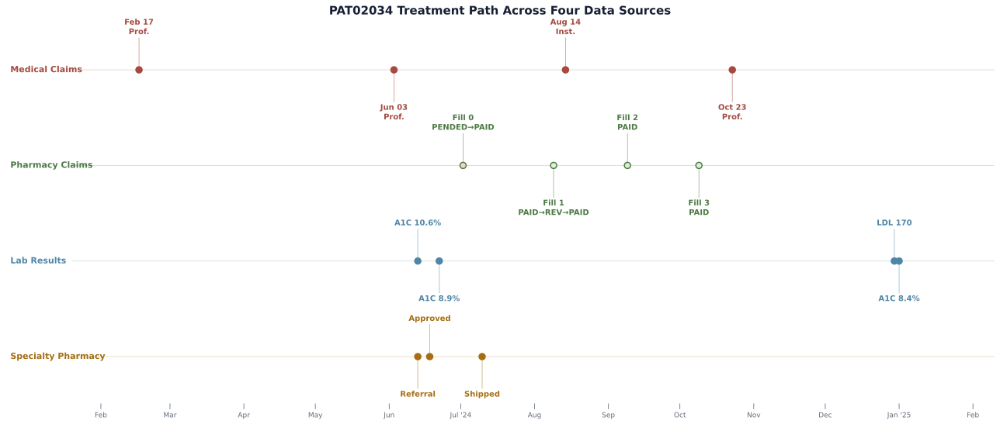
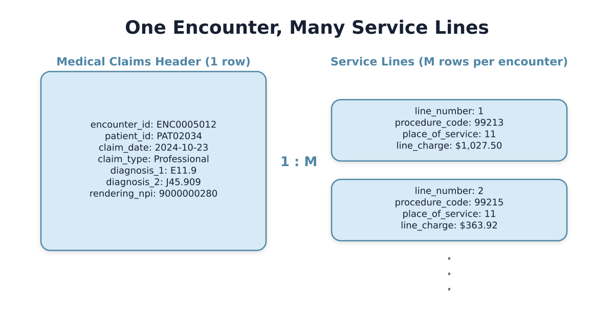
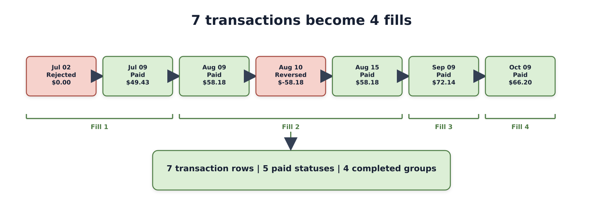
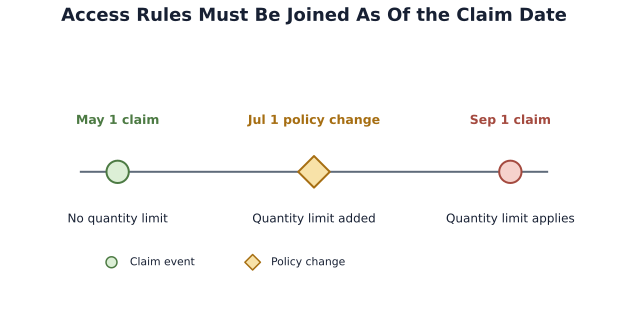
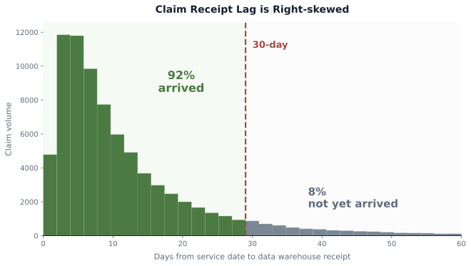
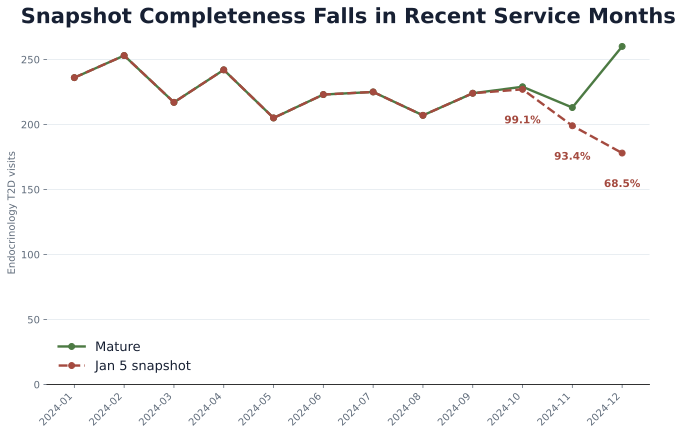

Chapter 3: A Synthetic Lab for Real Pharma Questions
Roventra is a fictional Type 2 diabetes (T2D) therapy finishing its first full year on the market. The commercial analytics team has just received its first complete annual data delivery: 7 vendor data tables, 2 internal feeds, and 2 public reference files.
This chapter works through these raw data. It uses a single fictional patient, PAT02034, to trace her treatment path across these data sources. It also shows how to detect and handle two pre-analysis data issues: claim receipt lag and drug code mapping gaps.
By the end of this chapter you will be able to:
- Identify the common data sources used in pharmaceutical commercial analysis
- Navigate medical claim headers, service lines, pharmacy claims, lab results, and the reference tables that connect them
- Generate the synthetic data package from Python
- Follow one patient's treatment from diagnosis through specialty pharmacy fulfillment to completed pharmacy fills, and derive completed fills by grouping transactions
- Retrieve the formulary rule that applied on a historical claim date
- Recognize two pre-analysis data issues and apply the correct handling for each
3.1 The Pharmaceutical Data Landscape
Pharmaceutical commercial data scientists work daily with three categories of data: longitudinal datasets from vendors, internal company records, and public reference data.
Longitudinal vendor data tracks patient-level events across time. Commercial longitudinal data suppliers (IQVIA, Komodo Health, Symphony Health, Optum, etc.) aggregate data from payers, lab, pharmacy benefit managers into deidentified patient-level datasets. This category includes medical claims (encounters, diagnoses, procedures), pharmacy claims (prescriptions filled and rejected), and lab results (test results from laboratory partnerships Quest, LabCorp).
Internal company records are generated by the company's own operations. The customer relationship management (CRM) system logs field-rep interactions with physicians and accounts.
Public reference data includes CMS Open Payments (physician payment disclosures) and CMS Medicare Part D prescriber summaries. These are aggregate files with no patient-level records, useful for benchmarking and external validation.
Patient records from different vendors are linked via privacy-preserving tokenization. Each data supplier runs certified software that converts identifying fields (name, birth date, sex, zip code, address) into an irreversible token. Token exchange vendors such as Datavant and HealthVerity operate ecosystems that allow cross-source matching without exposing those identifiers. Because of the tokenization, there will be false merges (two patients assigned the same token) and false splits (one patient assigned multiple tokens), affecting prevalence estimates and treatment sequences.
3.2 Synthetic Data: Design and Generation
Real patient-level pharma data is licensed, confidential, and restricted to controlled analytical environments. Dates, locations, rare conditions, and provider relationships can re-identify individuals even after names are removed.
The synthetic datasets in this book replace that licensed data with a transparent, rule-based simulation. Claim rates, treatment probabilities, event timing, access friction, and lab result distributions are codified and inspectable. The generated data reproduce structures and data-quality issues that appear in real pharma data.
The full file inventory and field reference are in Appendix 3A.
Executable scripts are in ch03_data/scripts/. Run the code in this chapter in order, or open chapter3_walkthrough.ipynb to execute it as a notebook.
Set up the environment once from the project root:
uv sync
Then generate the datasets:
uv run python ch03_data/scripts/generate_all_synthetic_data.py
With the default seed (20260609) you will see:
Generating data for 20,000 patients, 250 accounts, 666 providers...
Medical encounters: 49,882 mature / 44,567 early snapshot
Service lines: 62,285
Pharmacy claims: 46,055
Lab results: 55,815
Patients with Roventra treatment timeline: 6,401
Formulary change events: 13
Specialty pharmacy hub referrals: 6,096
CRM interactions: 3,359
Territory alignment records: 8
Digital events: 1,095
Open Payments records: 783
CMS Part D records: 1,057
Done. Data written to .../ch03_data/output_data/generated_data
The output saves in the following folders:
output_data/generated_data/: synthetic records from the generatoroutput_data/public_reference/: downloaded public reference extractsoutput_data/analysis_results/: outputs from analysis and data-quality scripts
3.3 One Patient through Multiple Data Sources:
PAT02034 is a female patient in the 65+ age band, in New Jersey.
import pandas as pd
patients = pd.read_csv("ch03_data/output_data/generated_data/reference/patients.csv")
print(patients.loc[patients.patient_id.eq("PAT02034")].to_string(index=False))
patient_id state region age_band sex true_launch_condition
PAT02034 NJ Northeast 65+ F True
Her prescribing physician is NPI 9000000280, an Endocrinologist. Her prescriber NPI comes from the claims (rendering_npi). Joining that NPI to providers.csv returns specialty and credential.
providers = pd.read_csv("ch03_data/output_data/generated_data/reference/providers.csv")
mc = pd.read_csv("ch03_data/output_data/generated_data/claims_medical/medical_claims_mature.csv")
hcp_npi = mc.loc[mc.patient_id.eq("PAT02034"), "rendering_npi"].mode()[0]
print(providers.loc[providers.npi.eq(hcp_npi)].to_string(index=False))
npi specialty_1 specialty_2 provider_state provider_type credential primary_facility_npi
9000000280 Endocrinology NJ Individual MD
Payer and eligibility windows come from patient_enrollments.csv. One row per patient-payer-period.
enroll = pd.read_csv(
"ch03_data/output_data/generated_data/reference/patient_enrollments.csv",
parse_dates=["eligibility_start_date", "eligibility_end_date"],
)
print(enroll[enroll.patient_id.eq("PAT02034")].to_string(index=False))
patient_id eligibility_start_date eligibility_end_date payer_id payer_type has_medical_coverage has_pharmacy_coverage product_type
PAT02034 2023-10-18 2025-04-08 PAY002 Commercial True True PPO
PAT02034 has one continuous enrollment period. In the full population, patients who changed plans have multiple enrollment rows.
The next 4 sections trace PAT02034 through her treatment path, one data source at a time.
| Source | Question |
|---|---|
| Medical claims | What encounters appear in the billing record, and what diagnoses were coded? |
| Pharmacy claims | How many Roventra fills did she actually complete? |
| Lab results | What do her A1C measurements show before and after treatment starts? |
| Formulary | What payer rules applied at the time of her first fill? |

Figure 3.1. Each lane is one data source. Medical claim encounters (red), pharmacy fills (green), lab tests (blue), and specialty pharmacy events (gold) share a common time axis, making the treatment sequence visible in a single view. The June and July cluster shows diagnosis, referral, approval, and first fill arriving within weeks of each other.
3.3.1 Medical claims: what does the billing record show?
The medical claims header table (medical_claims_mature.csv) carries one row per encounter: the patient, the rendering provider's NPI, the claim date, the claim type. The primary reason for the visit is diagnosis_1. Additional diagnoses document complications, chronic comorbidities, or secondary conditions. The admitting_diagnosis field is an inpatient-only field: it records the reason for admission, and it can differ from the discharge diagnosis coded in diagnosis_1 through diagnosis_10.
mc = pd.read_csv(
"ch03_data/output_data/generated_data/claims_medical/medical_claims_mature.csv"
)
print(mc.columns.tolist())
['encounter_id', 'patient_id', 'claim_type', 'claim_date', 'admitting_diagnosis',
'diagnosis_1', 'diagnosis_2', 'diagnosis_3', 'diagnosis_4', 'diagnosis_5',
'diagnosis_6', 'diagnosis_7', 'diagnosis_8', 'diagnosis_9', 'diagnosis_10',
'icd_procedure_1', 'icd_procedure_2', 'icd_procedure_3',
'patient_gender', 'patient_state', 'coverage_type',
'rendering_npi', 'attending_npi', 'referring_npi', 'facility_npi', 'payer_id']
Filter the ICD-10 Type 2 diabetes codes with .str.startswith("E11") because they form a family under the E11 prefix: E11.9 (uncomplicated), E11.65 (with hyperglycemia), E11.40 (with neuropathy), and dozens of complication subcodes. Matching on the prefix captures the entire family. Use .astype(str) before the string check because columns with no values for a given encounter are read as float64 (not object), and the .str accessor requires a string column.
Listing 3.1: Find T2D encounters across all diagnosis positions.
dx_cols = ["admitting_diagnosis"] + [f"diagnosis_{i}" for i in range(1, 11)]
t2d_mask = mc[dx_cols].apply(
lambda col: col.astype(str).str.startswith("E11") & col.notna()
).any(axis=1)
show = ["encounter_id", "claim_date", "claim_type", "rendering_npi",
"admitting_diagnosis", "diagnosis_1", "diagnosis_2", "diagnosis_3"]
pat_mc = mc.loc[mc.patient_id.eq("PAT02034") & t2d_mask, show].sort_values("claim_date")
print(pat_mc.fillna("").to_string(index=False))
encounter_id claim_date claim_type rendering_npi admitting_diagnosis diagnosis_1 diagnosis_2 diagnosis_3
ENC0005011 2024-02-17 Professional 9000000280 E11.9
ENC0005013 2024-06-03 Professional 9000000280 E11.9 J45.909
ENC0005010 2024-08-14 Institutional 9000000280 E11.9 N18.9
ENC0005012 2024-10-23 Professional 9000000280 E11.9 J45.909
All four encounters code T2D (E11.9) as diagnosis_1. Three are outpatient Professional claims and one is Institutional (inpatient). The Institutional encounter (ENC0005010) has admitting_diagnosis empty, which is the typical case even for inpatient billing. In the full population, the admitting_diagnosis field is populated in roughly 1% of all encounters; including it in the filter ensures those cases are captured. Comorbidities (CKD N18.9, asthma J45.909) appear only in secondary positions.
The medical claims header table captures patient, provider, dates, and diagnoses. The service lines table captures procedure codes, place of service, and charge amounts, one procedure per row for each encounter. Population counts and diagnosis analyses use the medical claims header; procedure-level filtering joins service lines to the medical claims header on encounter_id.

Figure 3.2. ENC0005012 has two service lines: an office visit (99213) and an extended visit (99215) billed on the same day. The header holds the patient, provider, date, and all ten diagnosis columns; the service lines hold procedure codes, place of service, and line-level charges.
sl = pd.read_csv("ch03_data/output_data/generated_data/claims_medical/service_lines.csv")
pat_sl = sl.loc[sl.patient_id.eq("PAT02034"),
["encounter_id", "line_number", "service_from",
"procedure_code", "place_of_service", "line_charge"]]
print(pat_sl.sort_values(["encounter_id", "line_number"]).to_string(index=False))
encounter_id line_number service_from procedure_code place_of_service line_charge
ENC0005010 1 2024-08-14 99214 22 491.56
ENC0005011 1 2024-02-17 96413 11 192.11
ENC0005012 1 2024-10-23 99213 11 1027.50
ENC0005012 2 2024-10-23 99215 11 363.92
ENC0005013 1 2024-06-03 99215 11 521.17
3.3.2 Pharmacy claims: how many fills did PAT02034 complete?
Each row in pharmacy_claims.csv is one transaction: a single attempt to fill a prescription. A prescription can generate multiple rows: the initial submission, rejections and resubmissions, reversals, and refills. To find the drug name, join the claim to the NDC reference table.
ndc_prescribed is the drug code as written by the prescriber. ndc is the code of what was actually dispensed. For most fills these match. They can differ when a pharmacy dispenses a different pack size, or when a generic drug is substituted for a brand name when the prescription allows it.
rx = pd.read_csv(
"ch03_data/output_data/generated_data/claims_pharmacy/pharmacy_claims.csv",
dtype={"ndc": str, "ndc_prescribed": str, "reject_code": str},
)
ref = pd.read_csv(
"ch03_data/output_data/generated_data/reference/ndc_codes.csv",
dtype={"ndc": str},
)
ndc_map = ref.set_index("ndc")["drug_name"]
rx["drug_name"] = rx["ndc_prescribed"].map(ndc_map)
pat = rx.loc[rx.patient_id.eq("PAT02034") & rx.drug_name.eq("Roventra")].copy()
cols = ["claim_id", "date_of_service", "transaction_type", "ndc_prescribed",
"fill_number", "reject_code", "patient_pay"]
print(pat.sort_values("date_of_service")[cols].fillna("").to_string(index=False))
claim_id date_of_service transaction_type ndc_prescribed fill_number reject_code patient_pay
RXCL0004665 2024-07-02 PENDED 90000-1001-11 0 70 0.00
RXCL0004666 2024-07-09 PAID 90000-1001-11 0 45.06
RXCL0004667 2024-08-09 PAID 90000-1001-11 1 64.88
RXCL0004668 2024-08-10 REVERSED 90000-1001-11 1 -64.88
RXCL0004669 2024-08-15 PAID 90000-1001-11 1 64.88
RXCL0004670 2024-09-09 PAID 90000-1001-11 2 45.13
RXCL0004671 2024-10-09 PAID 90000-1001-11 3 59.90
There are 7 rows after filtering on patient_id and drug name, but the correct number of completed fills is 4.
transaction_type takes three values. PAID means the claim cleared. PENDED means the payer's system held the claim for review; the reject code identifies why. REVERSED means a previously paid claim was voided. The July 2 PENDED transaction carries reject code 70 (NCPDP standard: "Product/Service Not Covered"), triggering a manual review that resolves to PAID seven days later. The August PAID, REVERSED, PAID pattern is a billing correction: the original claim was voided and resubmitted on August 15.
The grouping unit is the fill attempt, identified by fill_number within a prescription. Group by (prescriber_npi, ndc_prescribed, fill_number), the combination that uniquely identifies a fill attempt within a patient's treatment with a given provider and drug. Fill 0 (PENDED then PAID) and fill 1 (PAID, REVERSED, then PAID again) each collapse into one group. Figure 3.3 shows the full transaction chain.
Listing 3.2: Derive completed fills from pharmacy transactions.
chains = (
pat.sort_values(["date_of_service", "claim_id"])
.groupby(["prescriber_npi", "ndc_prescribed", "fill_number"], sort=False)
.agg(
first_date=("date_of_service", "first"),
final_type=("transaction_type", "last"),
net_patient_pay=("patient_pay", "sum"),
)
.reset_index()
)
chains["completed_fill"] = (
chains["final_type"].eq("PAID") & chains["net_patient_pay"].ge(0)
)
print(chains[["fill_number", "first_date", "final_type",
"net_patient_pay", "completed_fill"]].to_string(index=False))
print(f"\ncompleted fills: {int(chains.completed_fill.sum())}")
fill_number first_date final_type net_patient_pay completed_fill
0 2024-07-02 PAID 45.06 True
1 2024-08-09 PAID 64.88 True
2 2024-09-09 PAID 45.13 True
3 2024-10-09 PAID 59.90 True
completed fills: 4

Figure 3.3. Group by (prescriber_npi, ndc_prescribed, fill_number) so operational transactions become analytical fill attempts.
3.3.3 Lab results: what do PAT02034's A1C measurements show?
Lab results are typically sourced from test laboratory partnerships (Quest, LabCorp). The results are LOINC-codes with numeric results and reference ranges.
lab = pd.read_csv(
"ch03_data/output_data/generated_data/claims_lab/lab_results.csv",
parse_dates=["service_date"],
)
cols = ["lab_id", "service_date", "loinc_code", "test_name",
"result", "result_unit", "ref_low", "ref_high", "abnormal_flag"]
pat_lab = lab.loc[lab.patient_id.eq("PAT02034"), cols].sort_values("service_date")
print(pat_lab.fillna("").to_string(index=False))
lab_id service_date loinc_code test_name result result_unit ref_low ref_high abnormal_flag
LAB0005734 2024-06-13 4548-4 Hemoglobin A1c 10.6 percent 4.0 5.6 H
LAB0005735 2024-06-22 4548-4 Hemoglobin A1c 8.9 percent 4.0 5.6 H
LAB0005736 2024-12-30 2089-1 LDL Cholesterol 170.0 mg/dL 0.0 100.0 H
LAB0005737 2025-01-01 4548-4 Hemoglobin A1c 8.4 percent 4.0 5.6 H
LOINC 4548-4 is the standard identifier for Hemoglobin A1c; 2089-1 is LDL cholesterol. PAT02034's A1C reads 10.6% on June 13, nine days before the first Roventra prescription is written. An A1C above 6.5% meets the ADA diagnostic threshold for diabetes. By January 2025, after four completed fills, the A1C has fallen to 8.4%.
Note: For analytical use, filter on
test_nameand apply a numeric threshold toresultfor clinical classification. Theabnormal_flagis a coarse binary screen from the instrument's reference range, which may differ from the clinical threshold you need. Patients without lab results should remain in the analysis cohort because absence of a result in the data does not mean absence of the condition.
3.3.4 Formulary and access: what rules applied in July?
Two formulary files are in the package: formulary_status.csv for current rules and formulary_history.csv for change events. A historical claim was adjudicated under whatever rule was active on the service date.
patients = pd.read_csv("ch03_data/output_data/generated_data/reference/patients.csv")
fs = pd.read_csv("ch03_data/output_data/generated_data/formulary/formulary_status.csv")
fh = pd.read_csv("ch03_data/output_data/generated_data/formulary/formulary_history.csv",
parse_dates=["effective_date"])
payer = patients.loc[patients.patient_id.eq("PAT02034"), "payer_id"].iloc[0]
status = fs.loc[fs.plan_id.eq(payer) & fs.product_name.eq("Roventra"),
["plan_id", "tier", "prior_authorization", "step_therapy",
"quantity_limit", "specialty_pharmacy"]]
print(status.to_string(index=False))
plan_id tier prior_authorization step_therapy quantity_limit specialty_pharmacy
PAY002 Specialty Yes Yes Yes Yes
PAT02034's July fill was subject to prior authorization, step therapy, a quantity limit, and specialty-pharmacy routing. All four restrictions align with the PENDED claim on July 2 and the specialty pharmacy fulfillment path.
Reading current formulary status answers what the rules are today. PAY005 illustrates why historical claims require a different approach.
pay005_hist = fh.loc[
fh.plan_id.eq("PAY005") & fh.product_name.eq("Roventra")
].sort_values("effective_date")
print(pay005_hist[["effective_date", "prior_tier", "new_tier",
"prior_step_therapy", "new_step_therapy",
"prior_quantity_limit", "new_quantity_limit",
"change_type"]].to_string(index=False))
effective_date prior_tier new_tier prior_step_therapy new_step_therapy prior_quantity_limit new_quantity_limit change_type
2024-01-01 Specialty Specialty No No No No Restriction change
2024-07-01 Specialty Specialty No No No Yes Restriction change
On July 1, 2024, PAY005 kept Roventra at the Specialty tier and added a quantity limit. The step therapy state stayed the same. Reconstructing the access state for claim dates requires an as-of join.
Listing 3.3: Assign the payer rule active on each claim date.
first = pay005_hist.iloc[0]
states = pd.DataFrame(
[{"effective_date": pd.Timestamp("2024-01-01"),
"tier": first["prior_tier"],
"prior_authorization": first["prior_prior_authorization"],
"step_therapy": first["prior_step_therapy"],
"quantity_limit": first["prior_quantity_limit"]}]
+ [
{"effective_date": r["effective_date"],
"tier": r["new_tier"],
"prior_authorization": r["new_prior_authorization"],
"step_therapy": r["new_step_therapy"],
"quantity_limit": r["new_quantity_limit"]}
for _, r in pay005_hist.iterrows()
]
).sort_values("effective_date")
claims = pd.DataFrame({
"claim_date": pd.to_datetime(["2024-05-01", "2024-09-01"])
})
assigned = pd.merge_asof(
claims.sort_values("claim_date"),
states,
left_on="claim_date",
right_on="effective_date",
direction="backward",
)
print(assigned.to_string(index=False))
claim_date effective_date tier prior_authorization step_therapy quantity_limit
2024-05-01 2024-01-01 Specialty Yes No No
2024-09-01 2024-07-01 Specialty Yes No Yes
A PAY005 claim from May did not face a quantity limit. A September claim did. Reading only the current status file assigns the current quantity limit to every historical PAY005 claim, overstating the restriction burden in the first half of the year.
The rule is: join each event to the formulary record whose effective_date is at or before the event date.

Figure 3.4. Historical access assignment depends on the claim event date, while the July 1 policy change marks the boundary between the two quantity-limit states.
3.4 Pre-Analysis Data Checks
Two issues appear routinely in vendor-delivered pharmaceutical claims data before the analysis even begins: claim receipt lag (recent months are structurally incomplete) and reference mapping gaps (drug codes not in the reference table). The generator produces controlled examples of both at realistic rates.
Note: The data vendor mostly deduplicates claims before delivery and provides only completed, adjudicated encounters. If you work with raw payer clearinghouse feeds rather than a curated longitudinal dataset, duplicate detection and status filtering will be necessary.
3.4.1 Claim maturity: the false December decline
At the start of January 2025, the Roventra analytics team queries December endocrinology T2D visit volume. On a January 5 data pull:
service_month patient_count
2024-09 224
2024-10 227
2024-11 199
2024-12 178
December is 11% below November. The instinct is to investigate a market slowdown. The correct interpretation: medical claims take days to weeks to flow from the point of care into the warehouse. December looks low because most of its claims have not arrived yet.
The two-snapshot design makes this verifiable without waiting six weeks. The generator writes medical_claims.csv (early snapshot, five days after month close) and medical_claims_mature.csv (fully matured). Running the same query on both files reproduces the same diagnostic you would run in production.
Listing 3.4: Compare the early snapshot with the mature claim file.
import pandas as pd
providers = pd.read_csv(
"ch03_data/output_data/generated_data/reference/providers.csv"
)
endo_npis = providers.loc[providers.specialty_1.eq("Endocrinology"), "npi"]
dx_cols = ["admitting_diagnosis"] + [f"diagnosis_{i}" for i in range(1, 11)]
def t2d_endo_by_month(df: pd.DataFrame) -> pd.Series:
t2d_mask = df[dx_cols].apply(
lambda col: col.astype(str).str.startswith("E11") & col.notna()
).any(axis=1)
return (
df.loc[t2d_mask & df["rendering_npi"].isin(endo_npis)]
.assign(month=df["claim_date"].str[:7])
["month"].value_counts().sort_index()
)
early = pd.read_csv("ch03_data/output_data/generated_data/claims_medical/medical_claims.csv")
mature = pd.read_csv("ch03_data/output_data/generated_data/claims_medical/medical_claims_mature.csv")
view = pd.DataFrame({
"snapshot_jan05": t2d_endo_by_month(early),
"mature": t2d_endo_by_month(mature),
}).dropna()
view["completeness_pct"] = (100 * view["snapshot_jan05"] / view["mature"]).round(1)
view["cleared_90pct"] = view["completeness_pct"].ge(90)
view_2024 = view.loc["2024-01":"2024-12"]
print(view_2024.to_string())
snapshot_jan05 mature completeness_pct cleared_90pct
month
2024-01 236 236 100.0 True
2024-02 253 253 100.0 True
2024-03 217 217 100.0 True
2024-04 242 242 100.0 True
2024-05 205 205 100.0 True
2024-06 223 223 100.0 True
2024-07 225 225 100.0 True
2024-08 207 207 100.0 True
2024-09 224 224 100.0 True
2024-10 227 229 99.1 True
2024-11 199 213 93.4 True
2024-12 178 260 68.5 False
December's actual count is 260, 46% above the January 5 snapshot. The shortfall was not a market signal; it was missing data. November was also incomplete at 93.4%.
Medical claim delay has a long-tailed, right-skewed distribution. Most claims arrive quickly, but a meaningful minority arrive weeks later. Set the maturity cutoff from that distribution and label the months that have not cleared it. In this example, a 90% completeness cutoff keeps January through November 2024, then excludes December from the trend. January 2025 is omitted because the snapshot date is January 5, so the service month has barely materialized.

Figure 3.5. The distribution is log-normal with a long tail extending to 60+ days. At a 30-day maturity window, roughly 92% of claims have arrived (green zone). The remaining 8% sit in the gray zone, received eventually but not yet in the warehouse. The gap reflects structural data lag, not a market slowdown.
Figure 3.6 plots the comparison.

Figure 3.6. The October, November, and December labels show snapshot completeness; December's 68.5% value falls below the 90% cutoff, so the trend should stop at November for this snapshot.
The data_quality.py script runs a systematic completeness audit across all months and writes dq_snapshot_comparison.csv to output_data/analysis_results/data_quality/:
uv run python ch03_data/scripts/data_quality.py
This writes the snapshot comparison, mapping audit, coverage audit, temporal-integrity audit, and summary files to output_data/analysis_results/data_quality/.
3.4.2 NDC mapping gaps
Pharmacy claims carry drug codes but not drug names. Drug name comes from joining the NDC to a reference table. The failure mode is a code the reference does not recognize: a new pack size, a repackager formulation, or a variant that predates the last reference refresh.
The generator plants this failure by writing pack-size variant codes (90000-XXXX-12) into roughly 5% of pharmacy claim rows. These codes are intentionally absent from ndc_codes.csv.
Listing 3.5: Audit prescribed and dispensed NDC mappings.
rx = pd.read_csv(
"ch03_data/output_data/generated_data/claims_pharmacy/pharmacy_claims.csv",
dtype={"ndc": str, "ndc_prescribed": str},
)
ref = pd.read_csv(
"ch03_data/output_data/generated_data/reference/ndc_codes.csv",
dtype={"ndc": str},
)
ndc_map = ref.set_index("ndc")["drug_name"]
paid = rx.loc[rx.transaction_type.eq("PAID")].copy()
paid["drug_name_prescribed"] = paid["ndc_prescribed"].map(ndc_map)
paid["drug_name_dispensed"] = paid["ndc"].map(ndc_map)
print("=== Join on ndc_prescribed (prescribed drug) ===")
print(paid.groupby("drug_name_prescribed").size().sort_values(ascending=False).to_string())
gaps = paid.loc[paid["drug_name_dispensed"].isna() & paid["drug_name_prescribed"].notna()]
print(f"\nDispensed NDC absent from reference: {len(gaps):,} of {len(paid):,} "
f"paid fills ({100*len(gaps)/len(paid):.1f}%)")
print(gaps[["claim_id", "ndc_prescribed", "ndc",
"drug_name_prescribed"]].head(4).to_string(index=False))
=== Join on ndc_prescribed (prescribed drug) ===
drug_name_prescribed
Roventra 16637
Supportive Med 7632
Nexoral 7574
Vexpro 7398
Dispensed NDC absent from reference: 1,692 of 39,241 paid fills (4.3%)
claim_id ndc_prescribed ndc drug_name_prescribed
RXCL0000015 90000-1003-11 90000-1003-12 Vexpro
RXCL0000132 90000-1001-11 90000-1001-12 Roventra
RXCL0000163 90000-1003-11 90000-1003-12 Vexpro
RXCL0000226 90000-1002-11 90000-1002-12 Nexoral
The prescribed-NDC join accounts for all paid fills by drug name. The dispensed-NDC gap shows that 4.3% of fills were dispensed under a pack-size variant the reference does not recognize. The rows with -12 suffix are new pack sizes the pharmacy stocked as substitutes for the prescribed -11 pack.
In production, flag the unmatched dispensed codes, investigate whether they represent a reference gap or a data error, and prioritize a reference table update.
Table 3.4 summarizes both pre-analysis checks.
Table 3.4. Pre-analysis data checks: designed rate, measured result, and handling.
| Issue | Designed rate | Measured result | Correct handling |
|---|---|---|---|
| Claim receipt lag | Early snapshot 5 days post-close | Dec endocrinology T2D snapshot 68.5% complete vs mature | Set a maturity threshold; exclude months below it from trend analysis |
| Dispensed NDC absent from reference | ~5% of rows | 4.3% of paid fills | Flag absent codes; use ndc_prescribed for interim attribution; refresh reference |
3.5 Summary
This chapter built the synthetic data environment for the rest of the book and surfaced the join and quality patterns that recur in every downstream analysis.
The join architecture has three clusters. The patient cluster links everything to patients.csv on patient_id. The provider cluster requires two NPI joins: one to providers.csv for clinical attributes, one to hcp_targets.csv for commercial attributes. The drug reference cluster links ndc_prescribed to ndc_codes.csv for product attribution. The formulary uses an as-of join: retrieve the record whose effective_date is at or before the service date.
The source-level lessons:
- Medical claims: the wide diagnosis format (
diagnosis_1throughdiagnosis_10) requires an.any(axis=1)filter across all ten columns. Includeadmitting_diagnosisin the column list because it is an inpatient-only field populated in roughly 1% of all encounters, and in about one-third of those cases it holds a code not present indiagnosis_1throughdiagnosis_10. Comorbidities are coded in secondary positions and are invisible to a single-column check. Use.astype(str).str.startswith()to handle columns that pandas reads as float64 when all values are null. Population counts use the header grain; procedure-level analyses join toservice_lines.csvonencounter_id. - Pharmacy claims: derive drug name by joining
ndc_prescribedto the drug reference. Group by(prescriber_npi, ndc_prescribed, fill_number)to identify completed fills; check that the final transaction type is PAID and net patient pay is nonnegative. Seven transactions collapse to four completed fills once grouped correctly. - Lab results: filter on
test_nameand apply a numeric threshold toresultfor clinical classification. Patients without lab results must remain in the analysis cohort because absence of a result in the data does not imply absence of the condition. - Formulary: the current-status table answers what the rules are today. Historical claims were adjudicated under the rule active on their date. Join each event to the formulary record whose
effective_dateis at or before the event date.
The reusable rules are:
- Maturity rule: choose a completeness threshold from the claim-delay distribution, label months below it, and exclude those months from trend interpretation. In this chapter, the 90% cutoff excludes December 2024 from the January 5 snapshot, and January 2025 is left out because the month has not materialized.
- Mapping rule: use
ndc_prescribedfor stable interim product attribution, audit unmatchedndcvalues separately, and refresh the reference table before finalizing dispense-level analysis. - Historical access rule: assign formulary rules with an as-of join. The valid rule is the most recent record whose
effective_dateis at or before the event date.
3.6 Exercises
Each exercise is solvable with the generated data and fewer than twenty lines of pandas code.
-
Comorbidity requires all positions. §3.4.1 showed that T2D (E11.9) is always coded as
diagnosis_1for PAT02034's encounters, while comorbidities like CKD (N18.x) appear only in secondary positions. Usingmedical_claims_mature.csv, filter to all T2D encounters (checkingadmitting_diagnosisanddiagnosis_1throughdiagnosis_10) and count how many also code CKD somewhere across all eleven columns. Then repeat the count using onlydiagnosis_1for CKD. What fraction of CKD comorbidities are invisible to the single-column check? Which diagnosis positions carry the CKD code, and what does that tell you about when CKD is coded as primary versus secondary? -
Did the access change move rejection rates? The formulary history shows that PAY005 added a Roventra quantity limit on July 1, 2024, while keeping the Specialty tier and prior authorization requirement. Using
pharmacy_claims.csv, compare Roventra PENDED rates for PAY005 patients in H1 (January through June, before the change) versus H2 (July through December, after). Is the difference visible? What else would you need before attributing the change to the access restriction rather than to other factors? (That question previews Chapter 10.) -
Map the maturity curve. The §3.4.1 example used December 2024. Using both
medical_claims.csv(early snapshot) andmedical_claims_mature.csv(mature), compute the endocrinology T2D completeness percentage for every service month in 2024. Which three months are most incomplete in the early snapshot? At what completeness threshold would you set the maturity cutoff if your publication lag is two weeks? What months would be excluded at that threshold, and how would that affect a full-year trend analysis?
Two companion notebooks ship with the chapter: chapter3_walkthrough.ipynb executes every section in sequence, and exercise_solutions.ipynb works all three exercises with full discussion. Attempt the exercises before consulting the solutions.
Chapter 4 takes the patients, claims, lab results, and prevalence anchors built here and asks the first real commercial question: how large is the market, and where is the opportunity?
Field reference tables for all source types are in Appendix 3A.